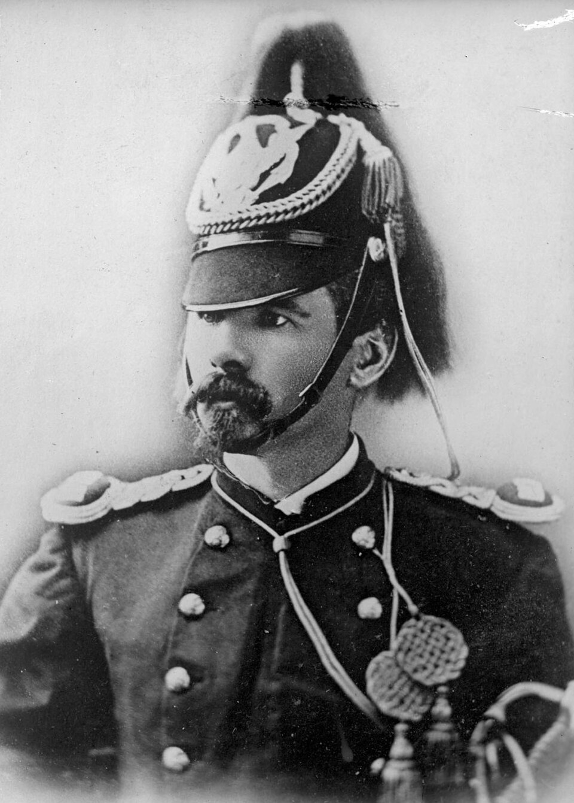

1840 — 1876
Born in County Carlow. Fought for the Pope in Italy. Survived the American Civil War. Killed at the Little Bighorn. A life that crossed three wars and two continents — and has never been fully told.
Read more ↓Myles Walter Keogh was one of the most remarkable Irish soldiers of the nineteenth century. He left Leighlinbridge, County Carlow in 1860 to defend the Papal States against the armies of Italian unification, receiving medals from Pope Pius IX before crossing the Atlantic to fight in the American Civil War. He rose to brevet Lieutenant Colonel, served on the staffs of some of the Union’s finest generals, and spent the last decade of his life on the American frontier as a captain in the 7th US Cavalry.
On 25 June 1876, he was killed alongside Lieutenant Colonel George Armstrong Custer at the Battle of the Little Bighorn. His horse, Comanche — found wounded but alive on the battlefield — became one of the most famous animals in American history.
“A hero in battle, he was as tender as a woman to those he loved. Those who had the honour of his friendship will mourn his loss as long as they live.” — Colonel Andrew J. Alexander, 1877
A full narrative biography of Keogh is now in research. This site exists to locate people, records and materials that may not yet have found their way into the published record.
If you hold any of the following — or know someone who might — please get in touch. All enquiries treated with discretion.
Letters written to or by Keogh, or letters held by the Keogh, Blanchfield or related families of County Carlow and County Kilkenny.
Documents relating to the Battalion of St Patrick (1860–62), the Battle of Castelfidardo, or the Company of Saint Patrick in Rome.
Materials held by the Throop-Martin family of Auburn, New York, or descendants. Keogh considered Willowbrook a second home.
Service records, diaries or letters relating to Keogh’s service on the staffs of Generals Shields, Buford and Stoneman.
Portraits, uniform items, medals or personal effects associated with Keogh, his family or the 7th Cavalry period.
Local records, oral histories, school or church documents relating to the Keogh family of Leighlinbridge and the wider area.
Records of the Nowlan family from the Tullow area. Major Henry James Nowlan of the 7th Cavalry was Keogh’s closest friend.
First-hand accounts, diaries or letters relating to the 1876 campaign, the battle, or the aftermath — from any perspective.
B.A. History & English Literature
Gareth Cuddy is an Irish writer and researcher with a long-standing interest in Myles Keogh and the broader story of Irish soldiers in the nineteenth-century world. He has spent years tracing Keogh’s life across archives in Ireland, the United States and Europe.
He is currently developing a full narrative biography — the first to treat Keogh’s life as a complete story rather than a prelude to Custer’s Last Stand.
Whether you hold a document, descend from a relevant family, or simply know something that might help — please reach out. Every lead is followed.
garethcuddy@gmail.com